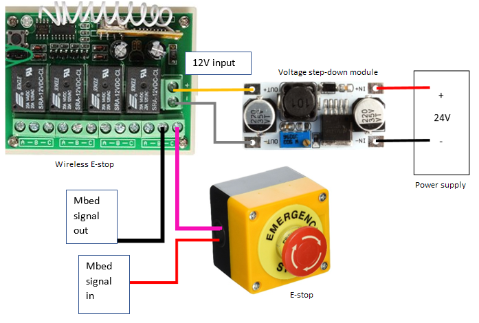

Circuitry of emergency stop and wireless emergency stop.
GitHub RepositoryUse interlock: connect jumper pin 1 and 2.
Relay: press one button is ON, press another button is OFF.
Power line → step-down module (12V output) → (+(yellow) -(grey)) of wireless E-stop
mbed signal (red) → E-stop (pink) → wireless E-stop → mbed signal (black)
The following circuit diagram is shown below.
